Year after year I receive for free nice cards, sometimes with quite special cancels, from different postal administrations. Here I show three of them, that I have got toward the end of this year 2005.
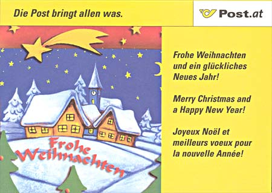
From the Austrian postal administration I have received a nice winter image of a village and greetings in three languages.
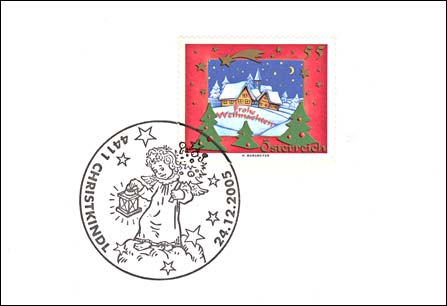
The verso of the card is philatelically more interesting. It displays the current Christmas stamp and the traditional cancel from the postal office 4011 Christkindl (the child of Christ).
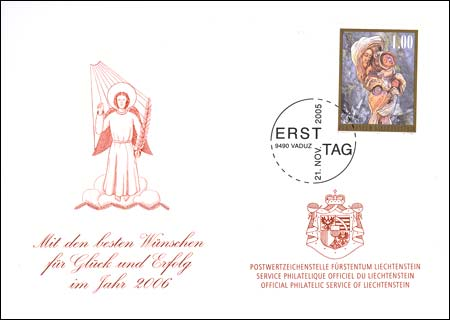
This card was sent to me by the PA of Liechtenstein "With the best wishes of luck and success in the year 2006".
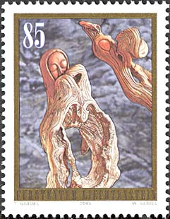
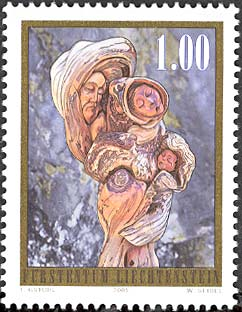
The Wooden Sculptures stamps are so nice that I show two of them above. So sorry that the first day cancel on the card is not very appealing.
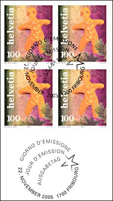
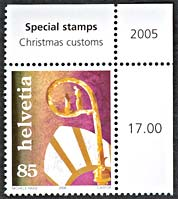
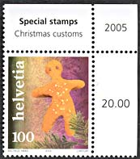
Swiss Posts launched this year its new four-year "Christmas Customs" series with the special stamps "Santa Claus in Fribourg" and "Grittibänz". The feast of St. Nicholas is celebrated on 6 December, but profane tradition rather than religious ceremony marks this day, as customs involving masks and noise which originally had nothing top do with the Saint coexist with the advent of the Bishop who distribute gifts The latter is explained by legends which made St. Nicholas the patron saint of children and students in the Middle Ages.
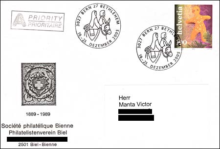
Nowadays, St. Nicholas's gifts include bread baked in the shape of a man with legs apart, called "Grittibänz", "Grättimaa", "Elggermaa", "Chlaus" or "petit bonhomme", depending on the region. The term mostly used in Western Switzerland "Benz/Bänz" is the short form of the Christian name Benedikt, while Gritti/Grätti" refers to the figure's legs being apart. "Ellgermaa" refers to the place Elgg in Canton Zurich, where a baker is said to have produced bread 100 years ago around Christmas time. Source: Focus on Stamps, 4/2005.
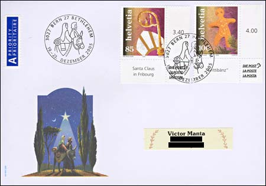
The "Grittibänz" stamps on the covers shown above were cancelled at the 3027 Bern 27 Bethlehem post office, a free service offered each end of the year by the Swiss Post. The first letter was sent by the philatelic association, and the second is self-addressed. This one is over franked but it is nice thanks to the labeled selvages.
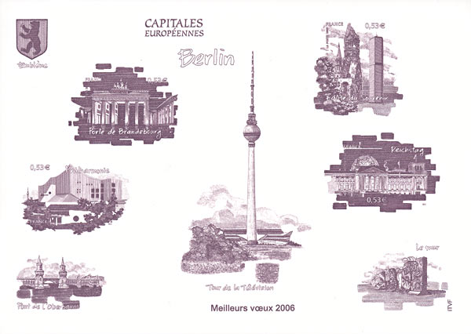
The above interesting engraving (France, European Capitals, Berlin, issued 2005), with the "Meilleurs Voeux 2006" = "Best Wishes" text being printed on it, arrived in February 2006. Welcome to my collection!
Links to Christmas on Stamps pages found on this site:
Stamps Christmas Tree, with greetings from 38 stamps collectors, in 16 different languages
Liechtenstein, Christmas 2001. Medallions in Wooden Frames
Liechtenstein, Christmas 1979. Embroideries.